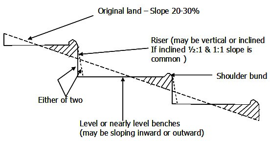

The original bench terrace system consists of a series of flat shelf-like areas that convert a steep slope of 20 to 30 percent to a series of level, or nearly level benches (Fig. 5.2). In other words, bench terracing consists of construction of series of platforms along contours cut into hill slope in a step like formation. These platforms are separated at regular intervals by vertical drop or by steep sided and protected by vegetation and sometimes packed by stone retaining walls. In fact, bench terrace converts the long un-interrupted slope into several small strips and make protected platform available for farming. In several hilly areas bench terraces have been used for the purpose of converting hill slopes to suit agriculture. In some areas where the climatic conditions favour the growing of certain cash crops like potato, coffee etc., the hill slopes are to be bench terraced before the area is put for cultivation of these crops. Bench terraces have also been adopted for converting sloping lands into irrigated fields or for orchard plantations.

Types of Bench Terraces
Depending on the purpose for which they are used, bench terraces are also classified as follows:
-
Hill-type bench terraces: used for hilly areas with a grade reversely towards the hill.
-
Irrigated bench terraces: level benches adopted under irrigated conditions.
-
Orchard bench terraces: narrow width terraces for individual trees. These are also referred to as intermittent terraces and step terraces.
The conversion of land into bench terraces over a period of time is referred to as gradual bench terracing. Bench terraces are classified depending upon the slope of benches. The different types are:
- bench terraces sloping outward
- bench terraces sloping inward
- bench terraces with level top
Bench terraces with slopes inside are to be adopted in heavy rainfall areas where a major portion of the rainfall is to be drained as surface runoff. In the case of these terraces, a suitable drain at the inward end of each of these terraces is to be provided to drain the runoff. These drains ultimately lead to a suitable outlet. These are also known as hill-type terraces. Bench terraces with level top are suitable for areas of medium rainfall, evenly distributed and having deep and highly permeable soils. Due to the fact that no slope is given to the benches it is expected that the most of the rainfall coming over the area is to be absorbed by the soil and very little water is to go as surface drainage. These types of terraces are also used where irrigation facilities are available and referred to as irrigated bench terraces. Bench terraces sloping outward are to be used in low rainfall areas with permeable soils. For bench terraces sloping outward a shoulder bund is essential even though such a bund is provided in the other two types also for giving stability to the edge of the terrace. In these terraces the rainfall thus conserved will have more time for soaking into the soil. Bench terraces with narrow width (about 1 m) are sometimes constructed for orchards bench terraces. These terraces are referred to as step terraces when a series of step like formations are made.